낮 17°, 저녁 8°로 일교차가 커요. 예식장 실내에서는 블레이저만 입고, 저녁에 쌀쌀하면 그레이 울 코트를 더하세요. 신발은 비에 강한 가죽 로퍼예요. 결혼식 후 저녁까지 이어지는 일정이에요. 모던한 무채색 위주로, 색은 많아야 하나만 넣었어요.
1 / 6
추천
쿠어 화이트 셔츠 + SYSTEM HOMME 블랙 블레이저
화이트, 블랙, 실버만 쓴 완전한 무채색 조합이에요. 패션지들이 하객룩의 기본으로 꼽는 '블랙 수트 + 화이트 셔츠' 공식이라 격식은 충분하고, 오버핏 블레이저와 로퍼 덕분에 정장처럼 딱딱하지 않고 모던해 보여요. 식이 끝나면 셔츠 단추를 하나 풀고 실버 목걸이를 더해서 데이트 분위기로 바꾸세요.
셔츠쿠어 화이트 핀스트라이프 셔츠
히든 버튼 셔츠라 타이 없이도 깔끔해요. 식장에서는 단추를 끝까지 채우세요.
블레이저SYSTEM HOMME 블랙 핀스트라이프 블레이저
얇은 세로 줄무늬가 있어서 블랙이어도 무겁지 않아요.
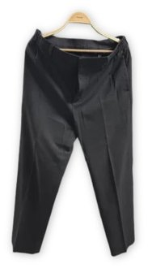
정장바지SOLID HOMME 블랙 테이퍼드 정장바지
블레이저와 같은 블랙이라 셋업처럼 보여요.
로퍼로스트가든 블랙 레더 로퍼
가죽이라 비에도 괜찮고, 옥스퍼드보다 한결 가벼워 보여요.
숄더백르메르 블랙 호보 숄더백
축의금 봉투, 우산, 지갑을 넣기 좋아요.
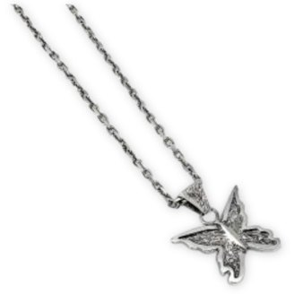
목걸이바호스튜디오 실버 목걸이
식장에서는 셔츠 안에 넣고, 데이트할 때 꺼내세요.
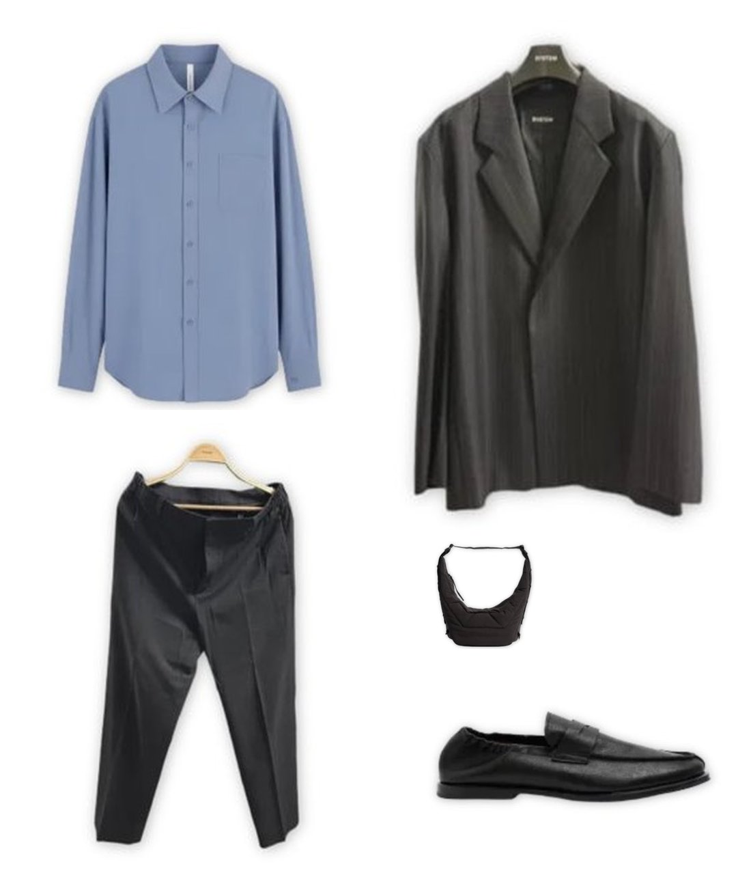
대안
포인트 컬러 하나: 노이어 블루 셔츠로 바꾸기
같은 블랙 블레이저, 슬랙스, 로퍼에 셔츠만 라이트 블루로 바꾼 버전이에요. 무채색 수트에 컬러 셔츠 하나로 포인트를 주는 방식이라 색은 딱 하나만 들어가요. 화이트 셔츠가 신부 의상과 겹칠까 신경 쓰이면 이쪽을 고르세요.
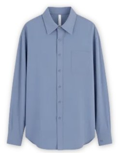
셔츠노이어 블루 셔츠
유일한 컬러 포인트예요.
블레이저SYSTEM HOMME 블랙 핀스트라이프 블레이저
정장바지SOLID HOMME 블랙 테이퍼드 정장바지
로퍼로스트가든 블랙 레더 로퍼
숄더백르메르 블랙 호보 숄더백
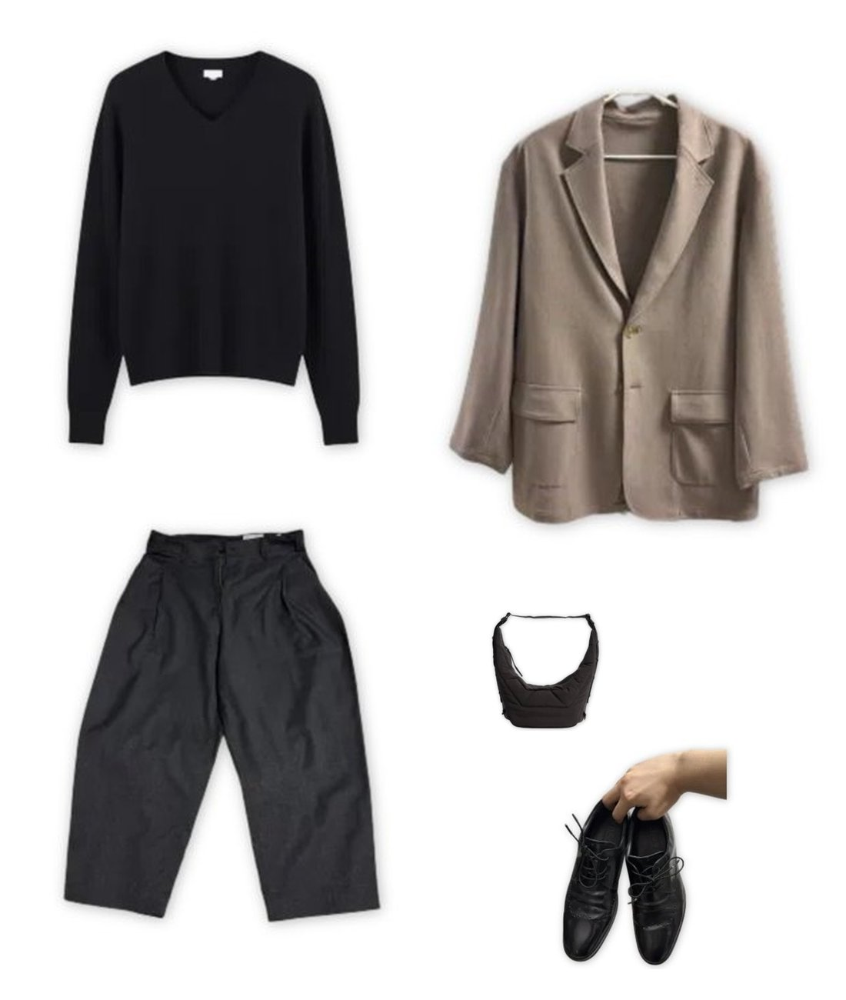
옷장 자동 조합
ART IF ACTS 블랙 브이넥 니트 + BEAMS JAPAN 토프 블레이저
같은 날씨와 격식 기준(무채색 위주, 포인트 컬러는 하나까지)으로 옷장에서 자동으로 고른 조합이에요.
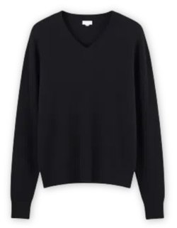
니트ART IF ACTS 블랙 브이넥 니트
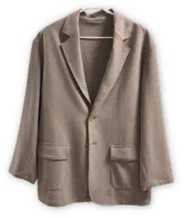
블레이저BEAMS JAPAN 토프 블레이저
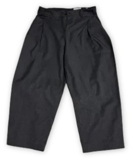
정장바지어나더 오피스 차콜 투턱 정장바지
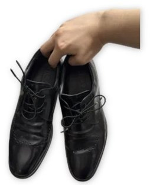
구두STCO 블랙 윙팁 구두
숄더백르메르 블랙 호보 숄더백
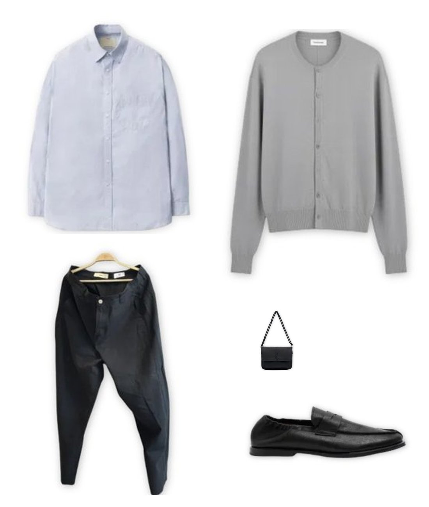
옷장 자동 조합
포터리 라이트블루 셔츠 + TONYWACK 그레이 가디건
같은 날씨와 격식 기준(무채색 위주, 포인트 컬러는 하나까지)으로 옷장에서 자동으로 고른 조합이에요.
셔츠포터리 라이트블루 셔츠
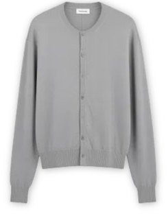
가디건TONYWACK 그레이 가디건
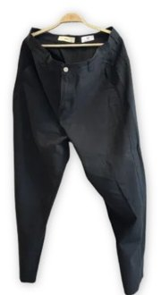
정장바지siiido 블랙 치노 정장바지
로퍼로스트가든 블랙 레더 로퍼
크로스백생로랑 블랙 나일론 크로스백
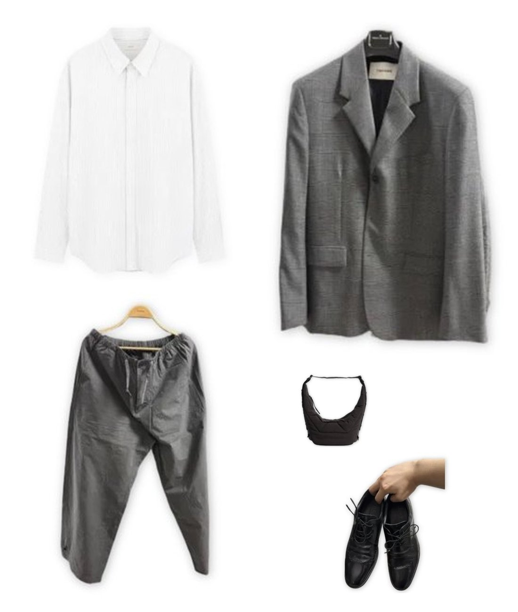
옷장 자동 조합
POTTERY 화이트 스트라이프 셔츠 + TONYWACK 그레이 글렌체크 블레이저
같은 날씨와 격식 기준(무채색 위주, 포인트 컬러는 하나까지)으로 옷장에서 자동으로 고른 조합이에요.
셔츠POTTERY 화이트 스트라이프 셔츠
블레이저TONYWACK 그레이 글렌체크 블레이저
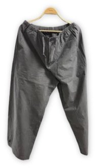
정장바지쿠어 그레이 밴딩 정장바지
구두STCO 블랙 윙팁 구두
숄더백르메르 블랙 호보 숄더백
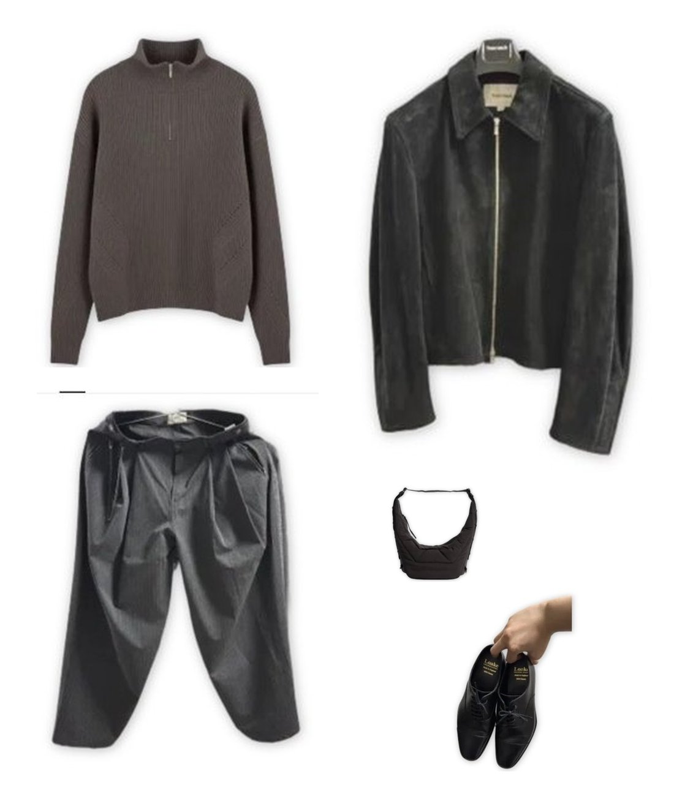
옷장 자동 조합
NONBLANK 브라운 하프집 니트 + TONYWACK 블랙 스웨이드 재킷
같은 날씨와 격식 기준(무채색 위주, 포인트 컬러는 하나까지)으로 옷장에서 자동으로 고른 조합이에요.

 셔츠쿠어 화이트 핀스트라이프 셔츠
셔츠쿠어 화이트 핀스트라이프 셔츠 블레이저SYSTEM HOMME 블랙 핀스트라이프 블레이저
블레이저SYSTEM HOMME 블랙 핀스트라이프 블레이저 로퍼로스트가든 블랙 레더 로퍼
로퍼로스트가든 블랙 레더 로퍼 숄더백르메르 블랙 호보 숄더백
숄더백르메르 블랙 호보 숄더백